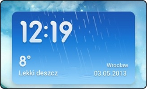

1) Jak zainstalować patch dla mt15i?
Pobierz
Android Terminal, uruchom i wpisz:
su
sh /system/bin/hallon.sh
2) Jak włączyć roota?
Wejdź w folder "Bezpieczeństwo", znajdź i uruchom aplikację Uprawnienia.
3) Jak aktywować efekty z DSP?
Idź do "System > Dźwięk > Equalizer MIUI" następnie wybierz DSP Manager.
4) Dlaczego nie mogę ustawić motywu z karty sd?
Prezczytaj aktykuł
Nowa Polityka Motywów MIUI - Obowiązuje od 1 Maja, 2013
5) Skąd wziąć Pogodę MIUI?

Pobierz
Weather BZ